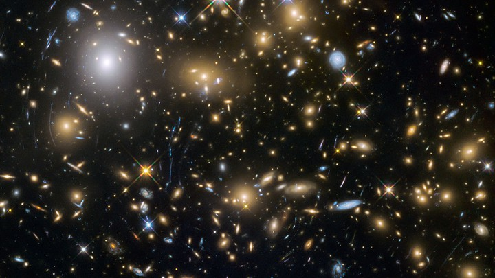

GALAXIES

A galaxy is a gravitationally bound system of stars, stellar remnants, interstellar gas, dust, and dark matter.The word galaxy is derived from the Greek galaxias (γαλαξίας),
literally "milky", a reference to the Milky Way. Galaxies range in size from dwarfs with just a few hundred million (108) stars to giants with one hundred trillion (1014) stars,
each orbiting its galaxy's center of mass.
Galaxies are categorized according to their visual morphology as elliptical, spiral, or irregular. Many galaxies are thought to have supermassive black holes at their centers.
The Milky Way's central black hole, known as Sagittarius A*, has a mass four million times greater than the Sun. As of March 2016, GN-z11 is the oldest and most distant observed
galaxy with a comoving distance of 32 billion light-years from Earth, and observed as it existed just 400 million years after the Big Bang.
Research released in 2016 revised the number of galaxies in the observable universe from a previous estimate of 200 billion (2×1011) to a suggested two trillion (2×1012)
or more and, overall, as many as an estimated 1×1024 stars (more stars than all the grains of sand on planet Earth). Most of the galaxies are 1,000 to 100,000 parsecs in
diameter (approximately 3,000 to 300,000 light years) and separated by distances on the order of millions of parsecs (or megaparsecs). For comparison, the Milky Way has
a diameter of at least 30,000 parsecs (100,000 ly) and is separated from the Andromeda Galaxy, its nearest large neighbor, by 780,000 parsecs (2.5 million ly.)
The space between galaxies is filled with a tenuous gas (the intergalactic medium) having an average density of less than one atom per cubic meter. The majority of galaxies
are gravitationally organized into groups, clusters, and superclusters. The Milky Way is part of the Local Group, which is dominated by it and the Andromeda Galaxy and is part
of the Virgo Supercluster. At the largest scale, these associations are generally arranged into sheets and filaments surrounded by immense voids.
Both the Local Group and the Virgo Supercluster are contained in a much larger cosmic structure named Laniakea.
A few galaxies outside the Milky Way are visible on a dark night to the unaided eye, including the Andromeda Galaxy, Large Magellanic Cloud,
the Small Magellanic Cloud, and the Triangulum Galaxy. In the 10th century, the Persian astronomer Al-Sufi made the earliest recorded identification of the Andromeda Galaxy,
describing it as a "small cloud". In 964, Al-Sufi probably mentioned the Large Magellanic Cloud in his Book of Fixed Stars (referring to "Al Bakr of the southern Arabs",
since at a declination of about 70° south it was not visible where he lived); it was not well known to Europeans until Magellan's voyage in the 16th century.
The Andromeda Galaxy was later independently noted by Simon Marius in 1612. In 1734, philosopher Emanuel Swedenborg in his Principia speculated that there may be galaxies
outside our own that are formed into galactic clusters that are minuscule parts of the universe which extends far beyond what we can see. These views "are remarkably close
to the present-day views of the cosmos." In 1745, Pierre Louis Maupertuis conjectured that some nebula-like objects are collections of stars with unique properties,
including a glow exceeding the light its stars produce on their own, and repeated Johannes Hevelius's view that the bright spots are massive and flattened due to their rotation.
In 1750, Thomas Wright speculated (correctly) that the Milky Way is a flattened disk of stars, and that some of the nebulae visible in the night sky might be separate Milky Ways.
Toward the end of the 18th century, Charles Messier compiled a catalog containing the 109 brightest celestial objects having nebulous appearance. Subsequently,
William Herschel assembled a catalog of 5,000 nebulae. In 1845, Lord Rosse constructed a new telescope and was able to distinguish between elliptical and spiral nebulae.
He also managed to make out individual point sources in some of these nebulae, lending credence to Kant's earlier conjecture.
In 1912, Vesto Slipher made spectrographic studies of the brightest spiral nebulae to determine their composition. Slipher discovered that the spiral nebulae have high
Doppler shifts, indicating that they are moving at a rate exceeding the velocity of the stars he had measured. He found that the majority of these nebulae are moving away from us.
In 1917, Heber Curtis observed nova S Andromedae within the "Great Andromeda Nebula" (as the Andromeda Galaxy, Messier object M31, was then known). Searching the photographic
record, he found 11 more novae. Curtis noticed that these novae were, on average, 10 magnitudes fainter than those that occurred within our galaxy. As a result, he was able to
come up with a distance estimate of 150,000 parsecs. He became a proponent of the so-called "island universes" hypothesis, which holds that spiral nebulae are actually independent
galaxies.
In 1920 a debate took place between Harlow Shapley and Heber Curtis (the Great Debate), concerning the nature of the Milky Way, spiral nebulae, and the dimensions of the universe.
To support his claim that the Great Andromeda Nebula is an external galaxy, Curtis noted the appearance of dark lanes resembling the dust clouds in the Milky Way, as well as the
significant Doppler shift.
In 1922, the Estonian astronomer Ernst Öpik gave a distance determination that supported the theory that the Andromeda Nebula is indeed a distant extra-galactic object.
Using the new 100 inch Mt. Wilson telescope, Edwin Hubble was able to resolve the outer parts of some spiral nebulae as collections of individual stars and identified some
Cepheid variables, thus allowing him to estimate the distance to the nebulae: they were far too distant to be part of the Milky Way. In 1936 Hubble produced a classification of
galactic morphology that is used to this day.
types of galaxies:
- Andromeda Galaxy
- Centaurus A Galaxy
- Messier51 whirlpool galaxy
1.Andromeda Galaxy

The Andromeda Galaxy (IPA: /ænˈdrɒmɪdə/), also known as Messier 31, M31, or NGC 224 and originally the Andromeda Nebula (see below), is a barred spiral galaxy approximately
2.5 million light-years (770 kiloparsecs) from Earth and the nearest major galaxy to the Milky Way. The galaxy's name stems from the area of Earth's sky in which it appears,
the constellation of Andromeda, which itself is named after the Ethiopian (or Phoenician) princess who was the wife of Perseus in Greek mythology.
The virial mass of the Andromeda Galaxy is of the same order of magnitude as that of the Milky Way, at 1 trillion solar masses (2.0×1042 kilograms). The mass of either
galaxy is difficult to estimate with any accuracy, but it was long thought that the Andromeda Galaxy is more massive than the Milky Way by a margin of some 25% to 50%.
This has been called into question by a 2018 study that cited a lower estimate on the mass of the Andromeda Galaxy,[12] combined with preliminary reports on a 2019 study
estimating a higher mass of the Milky Way.[13][14] The Andromeda Galaxy has a diameter of about 220,000 ly (67 kpc), making it the largest member of the Local Group in terms
of extension, if not mass.[citation needed]
The number of stars contained in the Andromeda Galaxy is estimated at one trillion (1×1012), or roughly twice the number estimated for the Milky Way.
The Milky Way and Andromeda galaxies are expected to collide in around 4.5 billion years, merging to form a giant elliptical galaxy or a large lenticular galaxy.
With an apparent magnitude of 3.4, the Andromeda Galaxy is among the brightest of the Messier objects, making it visible to the naked eye from Earth on moonless nights,
even when viewed from areas with moderate light pollution.
Based on its appearance in visible light, the Andromeda Galaxy is classified as an SA(s)b galaxy in the de Vaucouleurs–Sandage extended classification system
of spiral galaxies. However, infrared data from the 2MASS survey and from the Spitzer Space Telescope showed that Andromeda is actually a barred spiral galaxy, like the Milky Way,
with Andromeda's bar major axis oriented 55 degrees anti-clockwise from the disc major axis.
In 2005, astronomers used the Keck telescopes to show that the tenuous sprinkle of stars extending outward from the galaxy is actually part of the main disk itself.
This means that the spiral disk of stars in the Andromeda Galaxy is three times larger in diameter than previously estimated. This constitutes evidence that there is a vast,
extended stellar disk that makes the galaxy more than 220,000 light-years (67 kiloparsecs) in diameter. Previously, estimates of the Andromeda Galaxy's size ranged from 70,000
to 120,000 light-years (21 to 37 kpc) across.
The galaxy is inclined an estimated 77° relative to Earth (where an angle of 90° would be viewed directly from the side). Analysis of the cross-sectional shape of the galaxy
appears to demonstrate a pronounced, S-shaped warp, rather than just a flat disk.[72] A possible cause of such a warp could be gravitational interaction with the satellite
galaxies near the Andromeda Galaxy. The Galaxy M33 could be responsible for some warp in Andromeda's arms, though more precise distances and radial velocities are required.
Spectroscopic studies have provided detailed measurements of the rotational velocity of the Andromeda Galaxy as a function of radial distance from the core. The rotational
velocity has a maximum value of 225 km/s (140 mi/s) at 1,300 ly (82,000,000 AU) from the core, and it has its minimum possibly as low as 50 km/s (31 mi/s) at 7,000 ly
(440,000,000 AU) from the core. Further out, rotational velocity rises out to a radius of 33,000 ly (2.1×109 AU), where it reaches a peak of 250 km/s (160 mi/s).
The velocities slowly decline beyond that distance, dropping to around 200 km/s (120 mi/s) at 80,000 ly (5.1×109 AU). These velocity measurements imply a concentrated mass
of about 6×109 M☉ in the nucleus. The total mass of the galaxy increases linearly out to 45,000 ly (2.8×109 AU), then more slowly beyond that radius.
2.Centaurus A Galaxy

Centaurus A (also known as NGC 5128 or Caldwell 77) is a galaxy in the constellation of Centaurus. It was discovered in 1826 by Scottish astronomer James Dunlop from his home
in Parramatta, in New South Wales, Australia. There is considerable debate in the literature regarding the galaxy's fundamental properties such as its Hubble type
(lenticular galaxy or a giant elliptical galaxy) and distance (10–16 million light-years). NGC 5128 is one of the closest radio galaxies to Earth, so its active galactic
nucleus has been extensively studied by professional astronomers. The galaxy is also the fifth-brightest in the sky, making it an ideal amateur astronomy target,
although the galaxy is only visible from low northern latitudes and the southern hemisphere.
The center of the galaxy contains a supermassive black hole with a mass of 55 million solar masses, which ejects a relativistic jet that is responsible for emissions in the
X-ray and radio wavelengths. By taking radio observations of the jet separated by a decade, astronomers have determined that the inner parts of the jet are moving at
about half of the speed of light. X-rays are produced farther out as the jet collides with surrounding gases, resulting in the creation of highly energetic particles.
The X-ray jets of Centaurus A are thousands of light-years long, while the radio jets are over a million light-years long.
Like other starburst galaxies, a collision is suspected to be responsible for the intense burst of star formation. Models have suggested that Centaurus A was
a large elliptical galaxy that collided and merged with a smaller spiral galaxy.
NGC 5128 was discovered on 29 April 1826 by James Dunlop during a survey at the Parramatta Observatory.
In 1847 John Herschel described the galaxy as "two semi-ovals of elliptically formed nebula appearing to be cut asunder and separated by a broad
obscure band parallel to the larger axis of the nebula, in the midst of which a faint streak of light parallel to the sides of the cut appears."
In 1949 John Gatenby Bolton, Bruce Slee and Gordon Stanley localized NGC 5128 as one of the first extragalactic radio sources.Five years later, Walter Baade and Rudolph
Minkowski suggested that the peculiar structure is the result of a merge event of a giant elliptical galaxy and a small spiral galaxy.
The first detection of X-ray emissions, using a sounding rocket, was performed in 1970. In 1975–76 gamma-ray emissions from Centaurus A were observed through the
atmospheric Cerenkov technique.
The Einstein Observatory detected an X-ray jet emanating from the nucleus in 1979. Ten years later, young blue stars were found along the central dust band with
the Hubble Space Telescope.
The Chandra X-ray Observatory identified in 1999 more than 200 new point sources. Another space telescope, the Spitzer Space Telescope, found a parallelogram-shaped
structure of dust in near infrared images of Centaurus A in 2006.
Evidence of gamma emissions with very high energy (more than 100 GeV) was detected by the H.E.S.S-Observatorium in Namibia in 2009.
The following year, Centaurus A was identified as a source of cosmic rays of highest energies, after years of observations by Pierre Auger Observatory.
In 2016 a review of data from Chandra and XMM-Newton, unusual high flares of energy were found in NGC 5128 and the galaxy NGC 4636. Jimmy Erwin of University of Alabama
hypothesized the discovery as potentially a black hole in a yet unknown process or an intermediate-mass black hole.
3.Messier51 whirlpool galaxy

The Whirlpool Galaxy, also known as Messier 51a, M51a, and NGC 5194, is an interacting grand-design spiral galaxy with a Seyfert 2 active galactic nucleus.
It lies in the constellation Canes Venatici, and was the first galaxy to be classified as a spiral galaxy. Its distance is estimated to be 23 million light-years away from Earth.
The galaxy and its companion, NGC 5195, are easily observed by amateur astronomers, and the two galaxies may be seen with binoculars.
The Whirlpool Galaxy has been extensively observed by professional astronomers, who study it to understand galaxy structure (particularly structure associated with the spiral
arms) and galaxy interactions.
Located within the constellation Canes Venatici, M51 is found by following the easternmost star of the Big Dipper, Eta Ursae Majoris, and going 3.5° southwest.
Its declination is +47°, making it a circumpolar for observers located above 43°N latitude; it reaches high altitudes throughout the northern hemisphere making it an accessible
object from the early hours in winter through the end of spring season, after which observation is hindered in lower latitudes.
M51 is visible through binoculars under dark sky conditions, and it can be resolved in detail with modern amateur telescopes.
When seen through a 100 mm telescope the basic outlines of M51 (limited to 5×6') and its companion are visible. Under dark skies, and with a moderate eyepiece through a
150 mm telescope, M51's intrinsic spiral structure can be detected. With larger (>300 mm) instruments under dark sky conditions, the various spiral bands are apparent with HII
regions visible, and M51 can be seen to be attached to M51B.
As is usual for galaxies, the true extent of its structure can only be gathered from inspecting photographs; long exposures reveal a large nebula extending beyond
the visible circular appearance. In 1984, thanks to the high-speed detector—the so-called image-photon-counting- IPCS—system—developed jointly by the CNRS Laboratoire d'Astronomie
Spatiald (L.A.S.- CNRS) and the Observatoire de Haute Provence (O.H.P.) along with the particularly nice seeing offered by the Canada-France-Hawaii-Telescope (C.F.H.T.)
3.60m Cassegrain focus at Mauna Kea summit in Hawaii, Hua et al. detected the double component of the very nucleus of the Whirlpool galaxy (article in Astrophysical
Letters and Communications, 1987, vol. 25, pp. 187–204).
In January 2005 the Hubble Heritage Project constructed a 11477 × 7965-pixel composite image (shown in the infobox above) of M51 using Hubble's ACS instrument.
The image highlights the galaxy's spiral arms, and shows detail into some of the structures inside the arms.